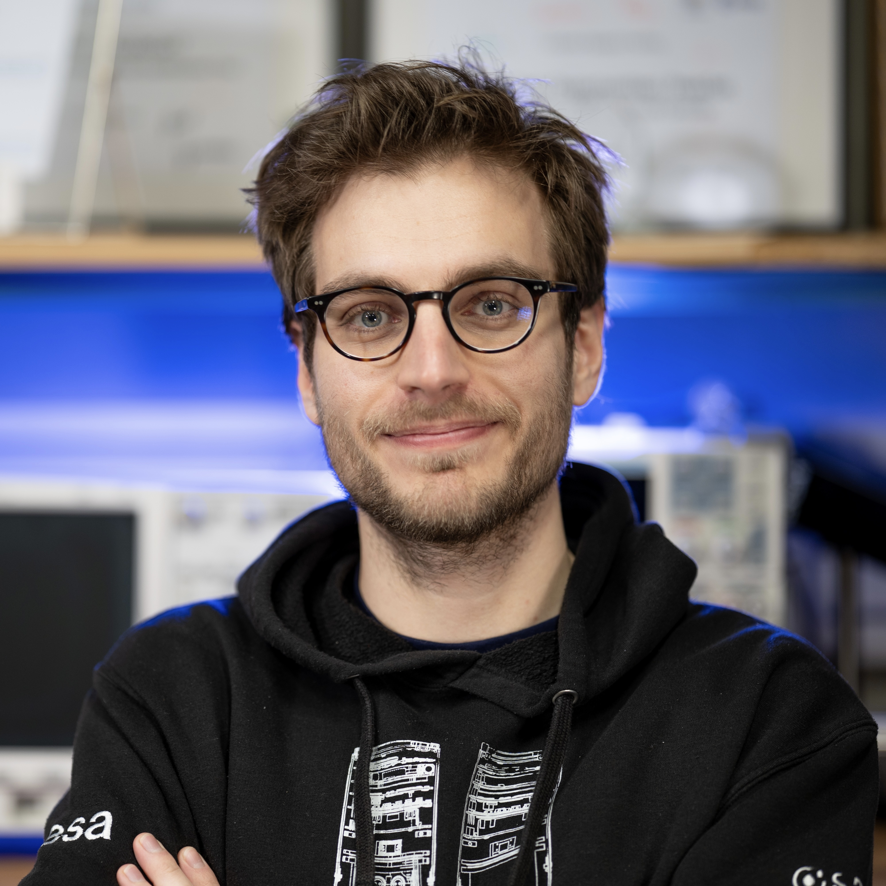

Asterios Arampatzis
I am a bioengineer and medical doctor currently pursuing a PhD in synthetic biology and control theory at ETH Zurich. I'm drawn to interdisciplinary problems that are curiosity-driven, societally impactful and compelling answers to the Hamming question.
My PhD research focuses on engineering cell therapies that act as autonomous genetic controllers. I'm also passionate about space exploration and am the lead scientist for a European Space Agency-selected satellite developed from scratch to enable large-scale biology experiments in orbit.
Previously, I founded Greece's first university synthetic biology team that worked on biocomputing, and grew into a nationwide ecosystem of more than 45 teams. I also contributed to research in cell-free systems (EPFL, SRP ’18) and neuroscience (University of Cambridge, Amgen Scholars ’17).
I've also been involved in a range of other projects, from bacterial biosensor development to computational neuroscience. Here is a CV.